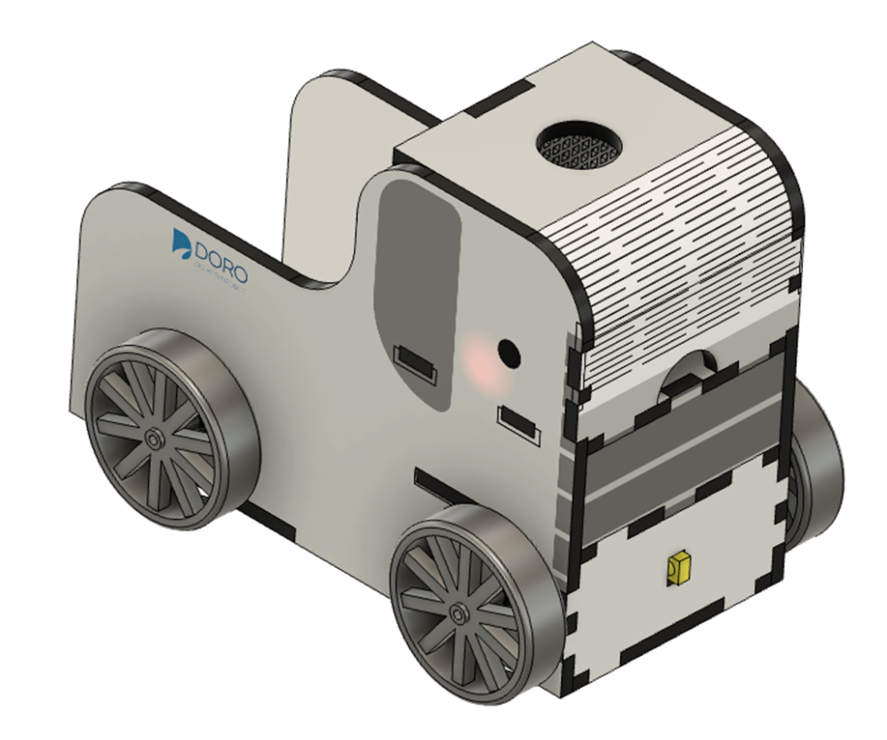

복구할 기능
주행
센서와 모터를 연결해 손을 따라 움직이는 로봇 자동차를 만들어요.
QR 코드를 찍고 바로 들어온 학생도 오늘 할 일을 이해할 수 있도록, 배경과 목표를 먼저 확인해요.
주행
도로랜드의 트랙에서는 자동차들이 신호를 따라 움직였어요. 그런데 거리와 방향을 감지하는 장치가 멈추면서 자동차들이 길을 잃었어요.
도카를 완성하고, 트랙 위의 주행 미션을 다시 시작해 주세요.
센서 위치와 바퀴 방향은 사진과 영상을 먼저 보고 시작하면 훨씬 덜 헷갈려요.
센서, 모터, 바퀴 위치를 먼저 훑어보고 시작하면 순서를 놓치지 않아요.
주행 방향과 센서 배치를 영상으로 먼저 보면 연결이 더 쉬워져요.
완성된 자동차가 어떻게 움직이는지 미리 보면 마지막 확인이 쉬워져요.
바퀴와 작은 나사가 떨어져도 바로 찾을 수 있게 책상 위를 넓게 정리해요.
모터와 전선을 연결하기 전에는 전원이 꺼져 있는지 먼저 확인해요.
센서 방향이나 배선 순서가 헷갈리면 혼자 억지로 하지 말고 도움을 요청해요.
이 약속을 모두 확인해야 만들기 section이 열려요.
상자 안의 부품을 하나씩 확인하고 빠진 것이 없는지 체크해 주세요.
안전 약속을 끝내면 아래 만들기 흐름을 따라갈 수 있어요.
안전 section에서 체크를 모두 마치면 만들기 section이 열려요.
자율주행 자동차가 어떻게 장애물을 피하고 길을 찾는지, 센서의 역할을 소개합니다.

IR 센서의 측정 원리와 모터 제어 구조를 학습합니다.
설명서를 따라 섀시, 모터, 센서를 조립합니다.
완성된 자동차의 센서 반응을 테스트하고, 주행 실험을 합니다.
자율주행 원리를 정리하고 발표합니다.
질문: 적외선 센서는 앞에 무엇이 있는지 어떻게 알아낼까요?
기본 키트만으로도 학습이 완결됩니다. 추가로 Teachable Machine을 활용하면, 웹캠으로 이미지 분류 모델을 학습시키고 AI의 인식 원리를 체험할 수 있습니다.
※ Teachable Machine 미사용 시에도 센서 실험과 주행 기록만으로 학습 목표를 달성합니다.
Teachable Machine 바로가기 →센서를 가까이 댔을 때 자동차가 어떻게 움직였는지 한 줄로 적어 봐요.
앞모습과 주행 중인 모습을 찍어 두면 다음 실험과 비교하기 좋아요.
어떤 거리에서 반응이 가장 잘 되었는지 활동지에 정리해 보세요.
공개용 조립 설명서가 연결되면 여기서 다시 볼 수 있어요.
정리 중공개용 조립 영상이 연결되면 헷갈리는 부분을 다시 볼 수 있어요.
정리 중완성 후 어떤 움직임이 맞는지 비교할 수 있도록 여기에 모아둘 거예요.
정리 중